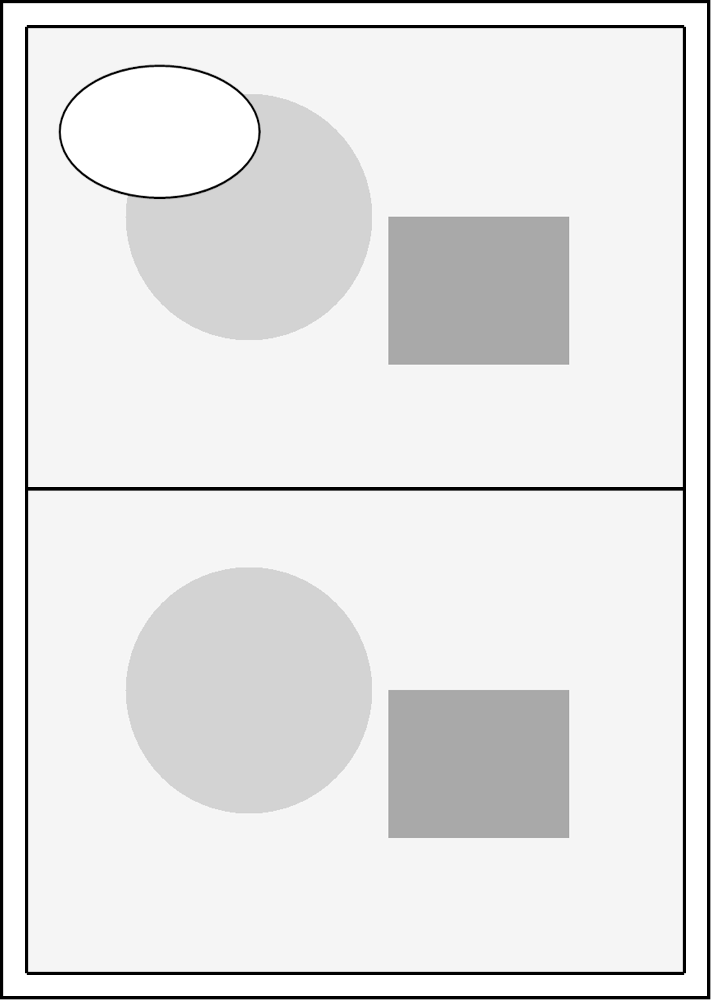

Quick Start
Use the Windows x64 portable application folder. Keep its accompanying DLLs, documentation, and examples together, then double-click ComicEditor.exe. The interface is currently in Chinese; the labels below match the visible controls.
Open and adjust a project
- Click 打开工程 (Open project) and select
examples/minimal-page/project.json. Use 项目 → 另存为 (Project → Save As) to create a new working file before making changes. Subsequent 保存 (Save) operations write to that copy. - Select the upper panel from 分镜 (Panels). Drag its image on the canvas; the mouse wheel scales the selected image. Ctrl + wheel zooms the whole page, and the middle button pans. The wheel in the right sidebar scrolls the properties.
- Switch to 顶点 (Vertices) or 边线 (Edges), then drag a control point or edge on the canvas. Changing the panel mask changes framing while preserving the complete source image.
- Switch to 气泡 (Bubbles), select an object, and drag or scale it on the canvas. Use 点选范围 (Pick clipping panel) to select its clipping panel. 整页自由 (Allow across the page) lets it cross panel boundaries.
- Use 前后遮挡 (Front/back occlusion) to set the bubble's relationship to a target inset. Clipping and occlusion are independent. The status area reports automatic layer changes. Each operation can be undone.
- Save the project and click 高清导出 PNG (High-resolution PNG export). Choose 1×, 2×, 2.5×, or 3× and check the output dimensions displayed in the interface. Insufficient source resolution produces a quality warning.
The neutral example is intended for practicing controls, and its source pixels are limited. A higher export scale preserves available detail but cannot restore detail absent from the source. Use complete original images for your own artwork.

| Visible control | Meaning |
|---|---|
| 保存 | Save |
| 项目 → 另存为 | Project → Save As |
| 撤销 / 重做 | Undo / Redo |
| 图片取景 | Image framing |
| 适合窗口 | Fit to window |
| 上移一层 / 下移一层 | Move up / down one layer |
| 置于该分镜前 / 置于该分镜后 | In front of / Behind this panel |
| 允许 Agent 修改本次会话 | Allow Agent to modify this session |
Start a page with Codex
Copy skills/comic-page-workflow into your creative project's .agents/skills/comic-page-workflow. Prepare the project configuration and your own requirements. The Skill includes assets/project-config-example.json: point its editor path to your local application folder and its requirement paths to your documents. The setup guide gives the detailed steps.
An example request for your own comic:
Use $comic-page-workflow. Read the project configuration, current story plan, and character and visual requirements. First prepare a dialogue draft for this page, identifying each speaker, bubble type, reading order, and emotion. Wait for my confirmation before designing the artwork.
For Agent initialization, provide an approved framework, complete panel images, and independent lettered objects. See the Agent guide. For an already open project, first obtain the current live snapshot; the window's permission checkbox determines whether Agent writes are allowed.
The full creation workflow documents each stage's inputs and outputs. See licensing and assets for the corresponding terms, and the Windows trial for recipient acceptance.